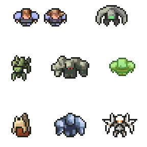

Alien Races
There are 8 different Alien races in FTL. They each have starting stats which can be leveled up: Piloting, Engines, Sheilds, Weapons, Repair, and Combat. Each race has their pros and cons, and they all have unique events in the game which are unlocked by having them as part of your crew. The best crew is a diverse one with many different species.
Humans

Humans are the most boring of the races. Not to mention the rebels are made up of mostly human scum. To be fair, they do have their merits. Well, one at least: Humans are fast learners, their stats level up fast.They also only have one special event, while other species have many.
Engi
Engis are engineers, they are mostly made of machinery. They are a great asset to your crew because they are an intelligent race, and their repair speed is double that of any other race. The downfall of Engi is that they are fragile, and their combat damage inflicted is halved. Engis are most useful to have in the engine room, piloting, or shields, as those are most important to repair quickly. It is important to have a strong crew member on board, or drones so Engi can avoid conflict.
Mantis
Mantis are probably one of my personal favorite Alien race to have on my crew. They are in general a hostile race, and are out for themselves. However, occasionally you can find a Mantis who supports The Federation. Mantis are warriors. They deal 150% the amount of damage, and their speed is 1.2X than that of other races. The downfall of Mantis is that their repair speed is halved. So it is best to have crew with faster repair speed, or a repair drone. Mantis are great to be used as boarding crew, they can be transported to an enemy ship and kill the enemy. This is beneficial because you can save your weapons and redirect power, and you can get more scrap and items if you destroy the enemy crew and not the ship.
Rockmen

In my opinion, Rockmen are the most difficult species to play. They are a very aggressive, violent race, although as with the Mantis, you occasionally run into friendly Rockmen. Rockmen are a resilient and strong race. They are immune to fire damage, and their health is 150 as opposed to 100 like the other races. The downfall of Rockmen is that their speed is halved. I find this is be inconvenient and not worth the benefits. Due to my personal playing styles, I have a lot of close calls. Which is made much worse by having slow crew members.
Zolton

Zoltons are a species which is made of mostly pure energy. They are an ally of the Engi, and they are conflicted about The Federation. They are a peaceful, just people, and avoid conflict when possible. The Zolton, being made of mostly energy, have the ability to provide one bar of power to the system in the room they are in at any given time. They also explode upon death and deal 15 damage to enemies in the room. The downfall of Zolton is that their health is much lower that other races, and just 70 hp. Although to me, the Zolton aren't as useful as other species, they are intelligent species, and have created ways to make up for their faults by creating a stronger shield which is equip on most of their ships.
Slug
The Slug races tends to keep to themselves, though when they are encountered they should be approached with caution. Slugs are deceitful and greedy. They reside mostly in nebula sectors, and are assumed to be up to no good when encountered in other sectors. If you happen to end up with a Slug crew member, they are beneficial, especially for navigating nebula sectors. Slugs have telepathic abilities, which allow them to have more vision when sensors are down. They are able to detect the location of crew on enemy ships, and they are able to see any room which is touching the room they are currently standing in. This is beneficial because sensors do not work inside of nebulas. Because of this ability, Slugs are also immune to mind control, which is available in the Advanced Edition of FTL.
Crystal

The Crystal race are the ancestors of the Rockmen. However, the Crystal race denounced the Rockmens violent ways and isolated themselves from the galaxy. They are very rare and the only way to obtain a Crytal crew member is by happening upon a series of special events which will unlock a single Crystal crew member. Crystal crew members have a Lockdown ability, which can lockdown a room they are in for 12 seconds. This can com ein handy is there is enemy crew on your ship and you need to protect certain systems. As with Rockmen, they are immune to fire damage, and their suffocation damage is halved. They also have increased health points at 125. Their only downfall is that speed is 20% reduced.
Lanius
Lanius is also a very rare race. Lanius are a metallic species, and they rely on leaching minerals to survive. Their society often hibernates for many years until they encounter a significant metal deposit, and they mostly keep to themselves when they are not in hibernation. The war has awoken the Lanius race in the Advanced Edition of Faster Than Light. Due to the Lanius biology, they leach oxygen out of any room they are in, which depending on your crew can be a good or bad this. Because of this, they take no damage from lack of oxygen. They also have a reduced movement speed. Though they are an interesting race, I am not a huge fan of Lanius crew members.